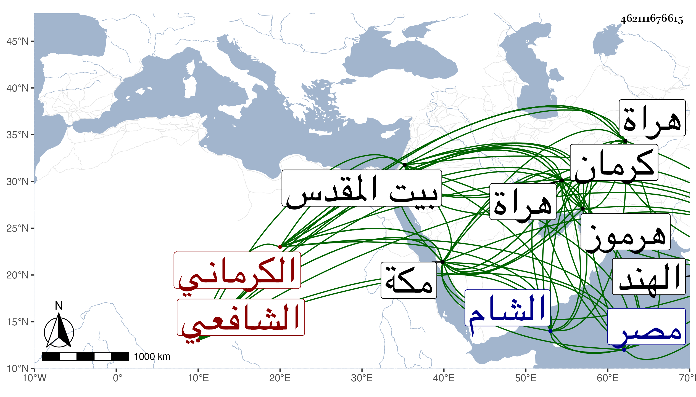

0902Sakhawi.DawLamic.ITO20230111-ara1.EIS1600.462111676615
Biography ID: 462111676615
407
عبد الوهاب بن محمود بن محمد بن عمر الكرماني الشافعي نزيل مكة والمصاهر لإمامها المحب وقتا ويعرف فيها بملا علاء الدين الكرماني . ولد تقريبا سنة ثمان وثلاثين وثمانمائة بكرمان ثم تحول منها لهراة فأخذ عن علمائها كمحتسبها العلامة المحقق المصنف حسين الخوافي الحنفي قرأ عليه غالب العضد وحاشية المطالع وسمع غيرهما وعلى وعلي التوشجي ومعناه حافظ الطير المسمى عندنا بالبازدار الحنفي قرأ عليه في الرياضيات ومن جملته الحساب وقرأ عليه شرحه على التجريد لتصير الدين الطوسي في علم الكلام والزين على الكرماني الشافعي قرأ عليه العربية والمنطق وغيرهما بحيث كان جل انتفاعه به وتميز في الفنون والرياضيات بل بلغني أنه إذا طالع محلا من فنونه لا يلحق فيه ، ودخل الشام ومصر والهند وأقبل عليه خواجا جهان وزار بيت المقدس ثم قطن مكة قبيل الثمانين لم يبرز منها إلا للزيارة النبوية مع الشيخ محمد بن قاوان ولم يتوجه بها للإقراء غالبا مع السؤال له في ذلك ، وممن أخذ عنه السيد أصيل الدين عبد الله والكرماني خادم ابني قاوان وبالغا عندي في الثناء عليه وربما يتفهم منه بعض الفضلاء ما يعسر عليه وأكثر من قصدي للسلام والمبالغة في التواضع ونعم الرجل تفردا وتوحدا ولكني سمعت من ينسبه لابن عربي ، ثم أنه سافر في البحر إلى هرموز ثم إلى هراة وهو في سنة سبع وتسعين بها .
